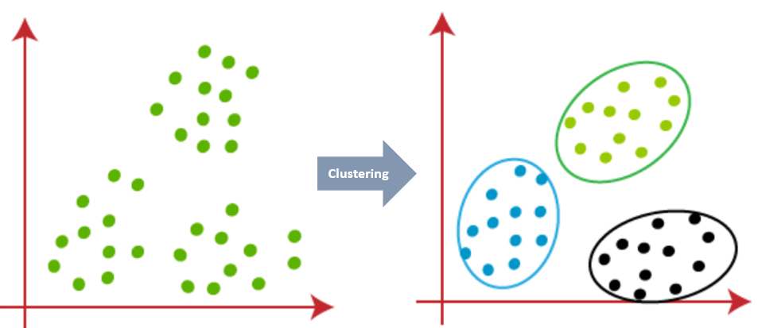

library(cluster) #Contain cluster function
library(dplyr) #Data manipulation
library(ggplot2) #Plotting function
library(readr) #Read and write excel/csv files
library(factoextra) #Extract and Visualize the Results of Multivariate Data AnalysesClustering_knowhow
What is clustering?
Clustering is a method of segregating unlabeled data or data points into different groups/clusters such that similar data points fall in the same cluster than those which differ from the others. The similarity measures are calculated using distance based metrics like Euclidean distance, Cosine similarity, Manhattan distance, etc.
For Example, In the graph given below, we can clearly see that the data points can be grouped into 3 clusters

Type of Clustering Algorithm
Some of the popular clustering algorithms are:
- Centroid-based Clustering (Partitioning methods)
- Density-based Clustering (Model-based methods)
- Connectivity-based Clustering (Hierarchical clustering)
- Distribution-based Clustering
1.Centroid-based Clustering (Partitioning methods)
Partitioning methods group data points on the basis of their closeness. The similarity measure chosen for these algorithms are Euclidean distance, Manhattan Distance or Minkowski Distance.
The primary drawback for these algorithms is we need to pre define the number of clusters before allocating the data points to a group.
One of the popular centroid based clustering technique is K means Clustering.
K Means Clustering
K means is an iterative clustering algorithm that works in these 5 steps:
Specify the desired number of clusters K: Let us choose k=2 for these 5 data points in 2-D space.
Randomly assign each data point to a cluster: Let’s assign three points in cluster 1, shown using orange color, and two points in cluster 2, shown using grey color.

Compute cluster centroids: Centroids correspond to the arithmetic mean of data points assigned to the cluster. The centroid of data points in the orange cluster is shown using the orange cross, and those in the grey cluster using a grey cross.
Assigns each observation to their closest centroid, based on the Euclidean distance between the object and the centroid
Re-computing the centroids for both clusters.

We will repeat the 4th and 5th steps until no further switching of data points between two clusters for two successive repeats.
K-Means Clustering in R
Step 1: Load packages
First, we’ll load below packages that contain several useful functions regarding k-means clustering in R.
Step 2: Load Data
We have used the “Mall_Customer” dataset in R for this case study.
#Loading the data
df <- read_csv("data/Mall_Customers.csv")
#Structure of the data
str(df)spc_tbl_ [200 × 5] (S3: spec_tbl_df/tbl_df/tbl/data.frame)
$ CustomerID : chr [1:200] "0001" "0002" "0003" "0004" ...
$ Genre : chr [1:200] "Male" "Male" "Female" "Female" ...
$ Age : num [1:200] 19 21 20 23 31 22 35 23 64 30 ...
$ Annual Income (k$) : num [1:200] 15 15 16 16 17 17 18 18 19 19 ...
$ Spending Score (1-100): num [1:200] 39 81 6 77 40 76 6 94 3 72 ...
- attr(*, "spec")=
.. cols(
.. CustomerID = col_character(),
.. Genre = col_character(),
.. Age = col_double(),
.. `Annual Income (k$)` = col_double(),
.. `Spending Score (1-100)` = col_double()
.. )
- attr(*, "problems")=<externalptr> dataset consists of 200 customers data with their age, annual income and Spending score.
#Rename the columns
df <- df %>%
rename("Annual_Income"= `Annual Income (k$)`, "Spending_score"= `Spending Score (1-100)`)
#remove rows with missing values
df <- na.omit(df)
#scale each variable to have a mean of 0 and sd of 1
df1 <- df %>%
mutate(across(where(is.numeric), scale))
#view first six rows of dataset
head(df1)# A tibble: 6 × 5
CustomerID Genre Age[,1] Annual_Income[,1] Spending_score[,1]
<chr> <chr> <dbl> <dbl> <dbl>
1 0001 Male -1.42 -1.73 -0.434
2 0002 Male -1.28 -1.73 1.19
3 0003 Female -1.35 -1.70 -1.71
4 0004 Female -1.13 -1.70 1.04
5 0005 Female -0.562 -1.66 -0.395
6 0006 Female -1.21 -1.66 0.999We have separated the CustomerID and Genre from the dataset. The reason for removing these variables from the cluster dataset as Kmeans can handle only numerical variables.
To create cluster with categorical or ordinal variable we can use k-Medoid clustering.
df1 <- df1[,4:5]Step 3: Find the Optimal Number of Clusters
To perform k-means clustering in R we can use the built-in kmeans() function, which uses the following syntax:
kmeans(data, centers, iter.max, nstart)
where:
- data: Name of the dataset.
- centers: The number of clusters, denoted k.
- iter.max (optional): The maximum number of iterations allowed. Default value is 10.
- nstart (optional): The number of initial configurations. Default value is 1.- Centers is the k of K Means. centers = 5 would results in 5 clusters being created. We need to predefine the k before the cluster process starts.
- iter.max is the number of times the algorithm will repeat the cluster assignment and update the centers / centroids. Iteration stops after this many iterations even if the convergence criterion is not satisfied
- nstart is the number of times the initial starting points are re-sampled. It means at the initialization of Clusters you need to specify how many clusters you want and the algorithm will randomly find same number of centroids to initialize. nstart gives you an edge to initialize the centroids through re sampling.
For example if total number of cluster is 3 and nstart=25 then it extracts 3 sets of data, 25 times, and for each of these times, the algorithm is run (up to iter.max # of iterations) and the cost function (total sum of the squares) is evaluated and finally 3 centroids with lowest cost function are chosen to start the clustering process.
To find the best number of clusters/centroids there are two popular methods as shown below.
A. Elbow Method:
It has two parts as explained below-
WSS: The Within Sum of Squares (WSS) is the sum of distance between the centroids and every other data points within a cluster. Small WSS indicates that every data point is close to its nearest centroids.
Elbow rule/method: Here we plot out the WSS score against the number of K. Because with the number of K increasing, the WSS will always decrease; however, the magnitude of decrease between each k will be diminishing, and the plot will be a curve which looks like an arm that curled up. In this way, we can find out which point falls on the elbow.
set.seed(1)
wss<- NULL
#Feeding different centroid/cluster and record WSS
for (i in 1:10){
fit = kmeans(df1,centers = i,nstart=25)
wss = c(wss, fit$tot.withinss)
}
#Visualize the plot
plot(1:10, wss, type = "o", xlab='Number of clusters(k)')Based on the above plot at k=5 we can see an “elbow” where the sum of squares begins to “bend” or level off so the ideal number of clusters should be 5.
The above process to compute the “Elbow method” has been wrapped up in a single function (fviz_nbclust):
fviz_nbclust(df1, kmeans, method = "wss",nstart=25)B. Silhouette Method:
The silhouette coefficient or silhouette score is a measure of how similar a data point is within-cluster (intra-cluster) compared to other clusters (inter-cluster).
The Silhouette Coefficient is calculated using the mean intra-cluster distance (a) and the mean nearest-cluster distance (b) for each sample. The Silhouette Coefficient for a sample is (b - a) / max(a, b)
Here we will plot the silhouette width/coefficient for different number of clusters and will choose the point where the silhouette width is highest.
Points to Remember While Calculating Silhouette Coefficient:
The value of the silhouette coefficient is between [-1, 1]. A score of 1 denotes the best, meaning that the data points are very compact within the cluster to which it belongs and far away from the other clusters. The worst value is -1. Values near 0 denote overlapping clusters.
In this demonstration, we are going to see how silhouette method is used.
silhouette_score <- function(k){
km <- kmeans(df1, centers = k,nstart = 25)
ss <- silhouette(km$cluster, dist(df1))
mean(ss[, 3])
}
k <- 2:10
avg_sil <- sapply(k, silhouette_score)
plot(k, type='b', avg_sil, xlab='Number of clusters', ylab='Average Silhouette Scores', frame=FALSE)From the above method we can see the silhouette width is highest at cluster 5 so the optimal number of cluster should be 5.
Similar to the elbow method, this process to compute the “average silhoutte method” has been wrapped up in a single function (fviz_nbclust):
fviz_nbclust(df1, kmeans, method='silhouette',nstart=25)The optimal number of clusters is 5.
Step 4: Perform K-Means Clustering with Optimal K
Lastly, we can perform k-means clustering on the dataset using the optimal value for k of 5:
#make this example reproducible
set.seed(1)
#perform k-means clustering with k = 5 clusters
fit <- kmeans(df1, 5, nstart=25)
#view results
fitK-means clustering with 5 clusters of sizes 22, 35, 81, 39, 23
Cluster means:
Annual_Income Spending_score
1 -1.3262173 1.12934389
2 1.0523622 -1.28122394
3 -0.2004097 -0.02638995
4 0.9891010 1.23640011
5 -1.3042458 -1.13411939
Clustering vector:
[1] 5 1 5 1 5 1 5 1 5 1 5 1 5 1 5 1 5 1 5 1 5 1 5 1 5 1 5 1 5 1 5 1 5 1 5 1 5
[38] 1 5 1 5 1 5 3 5 1 3 3 3 3 3 3 3 3 3 3 3 3 3 3 3 3 3 3 3 3 3 3 3 3 3 3 3 3
[75] 3 3 3 3 3 3 3 3 3 3 3 3 3 3 3 3 3 3 3 3 3 3 3 3 3 3 3 3 3 3 3 3 3 3 3 3 3
[112] 3 3 3 3 3 3 3 3 3 3 3 3 4 2 4 3 4 2 4 2 4 3 4 2 4 2 4 2 4 2 4 3 4 2 4 2 4
[149] 2 4 2 4 2 4 2 4 2 4 2 4 2 4 2 4 2 4 2 4 2 4 2 4 2 4 2 4 2 4 2 4 2 4 2 4 2
[186] 4 2 4 2 4 2 4 2 4 2 4 2 4 2 4
Within cluster sum of squares by cluster:
[1] 5.217630 18.304646 14.485632 19.655252 7.577407
(between_SS / total_SS = 83.6 %)
Available components:
[1] "cluster" "centers" "totss" "withinss" "tot.withinss"
[6] "betweenss" "size" "iter" "ifault" We can visualize the clusters on a scatterplot that displays the first two principal components on the axes using the fivz_cluster() function:
#plot results of final k-means model
fviz_cluster(fit, data = df1)Step 5: Exporting the data by adding generated clusters
#Adding the clusters in the main data
df_cluster <- df %>%
mutate(cluster=fit$cluster)
#Creating Summary of created clusters based on existing variables
df_summary <- df_cluster %>%
group_by(cluster) %>%
summarise(records=n(),avg_age=mean(Age),avg_annual_income=mean(Annual_Income),avg_spending_score=mean(Spending_score))
print(df_summary)# A tibble: 5 × 5
cluster records avg_age avg_annual_income avg_spending_score
<int> <int> <dbl> <dbl> <dbl>
1 1 22 25.3 25.7 79.4
2 2 35 41.1 88.2 17.1
3 3 81 42.7 55.3 49.5
4 4 39 32.7 86.5 82.1
5 5 23 45.2 26.3 20.9We can create a group of potential customers to target based on their age, average annual income and average spending score.